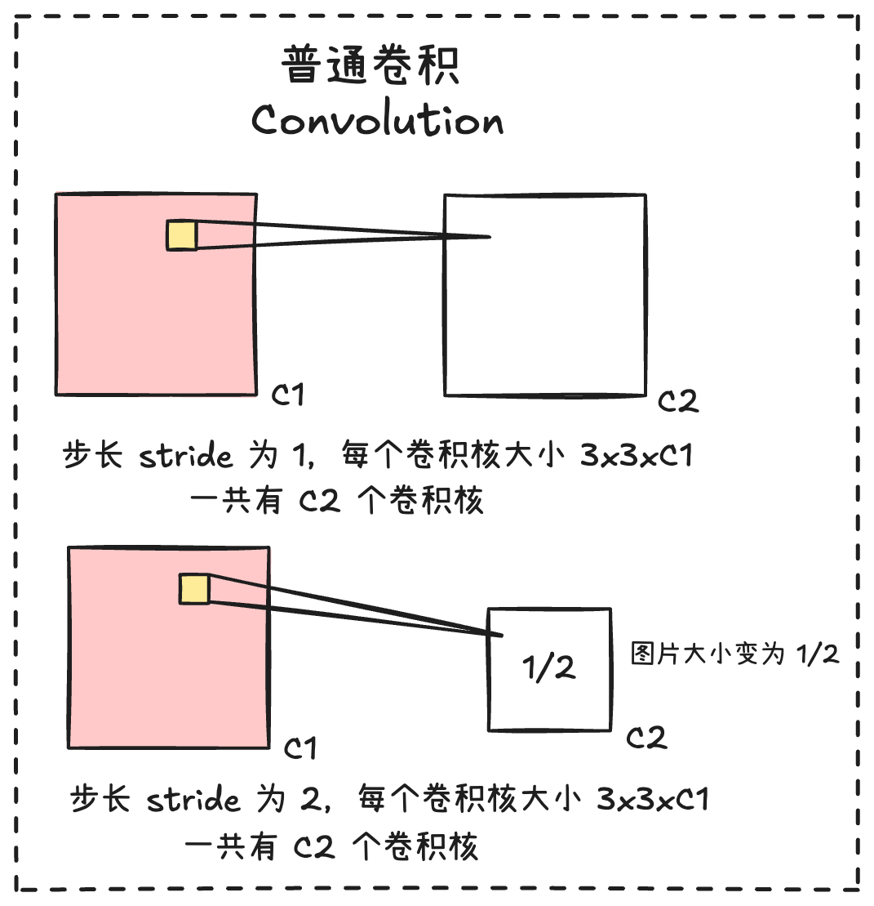
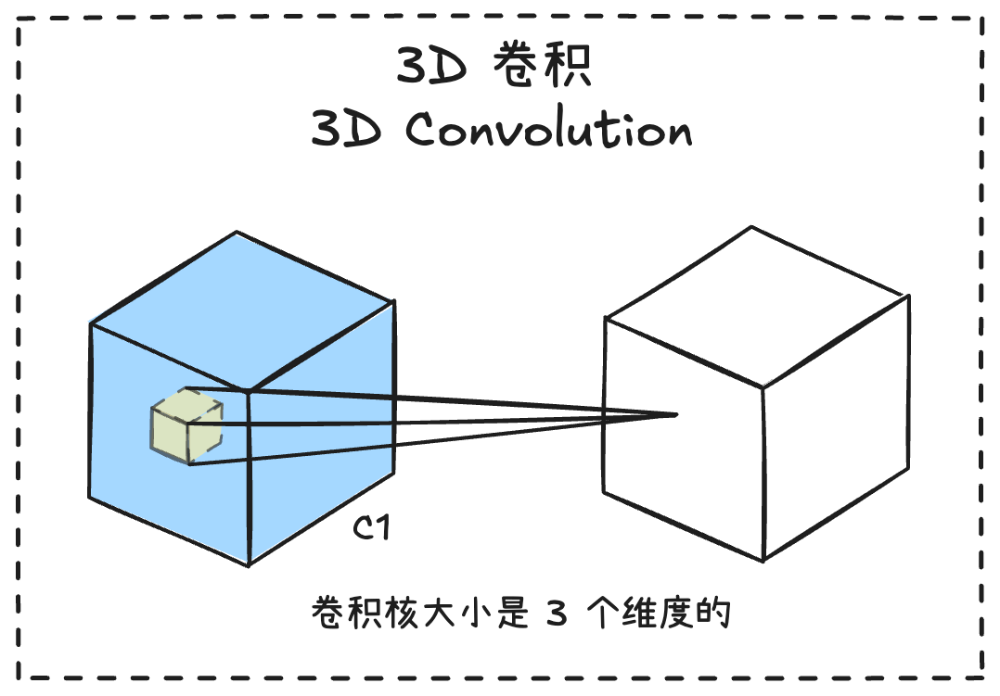
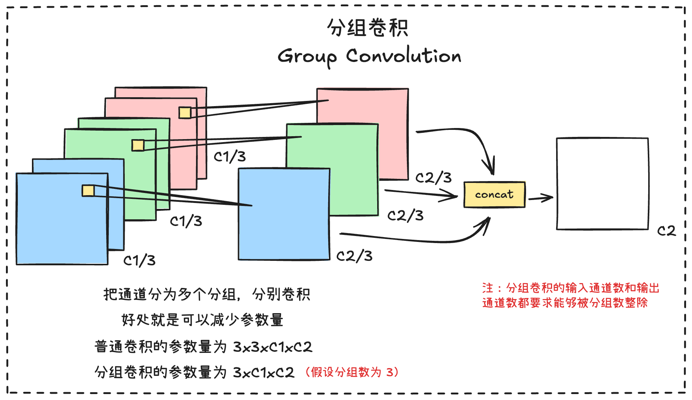
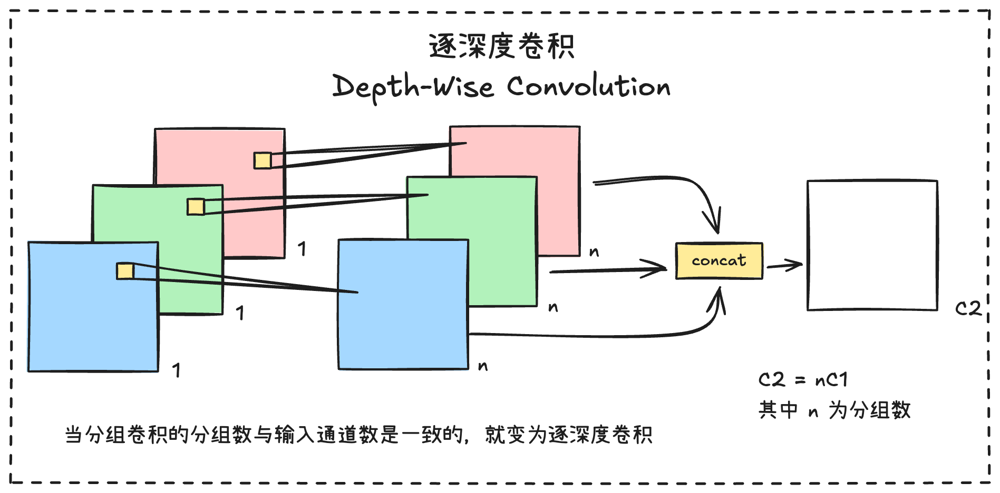
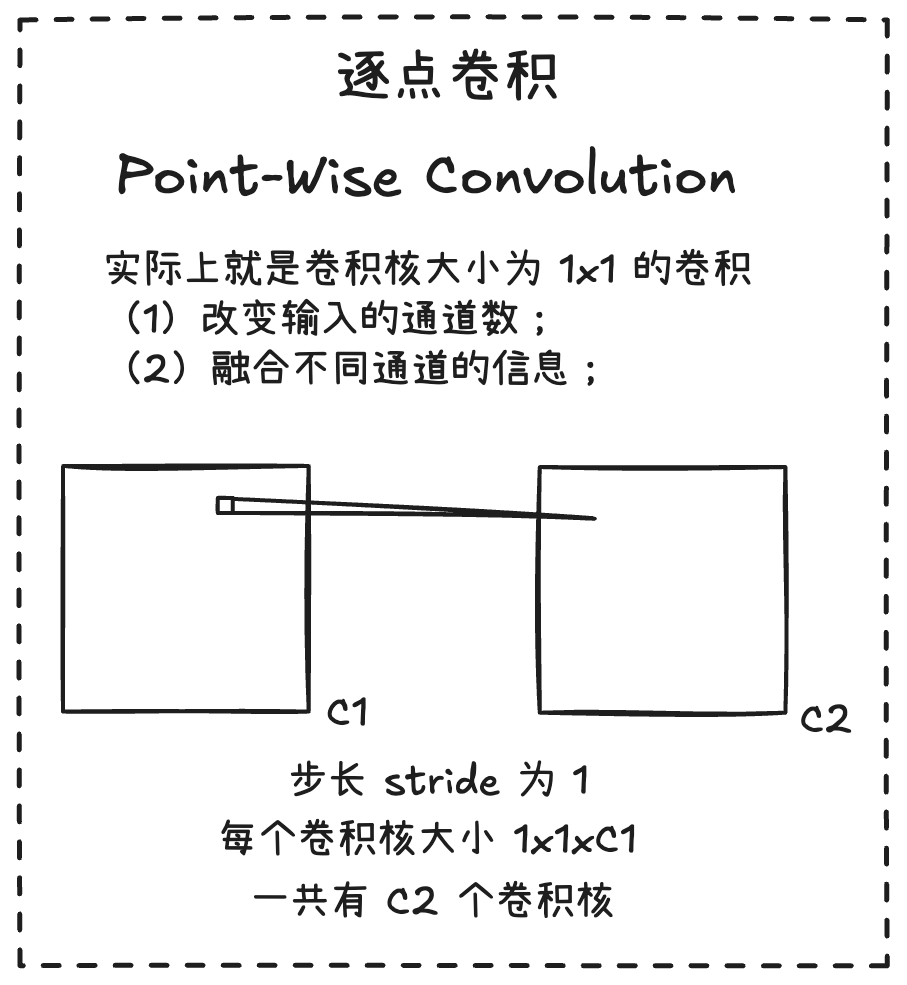
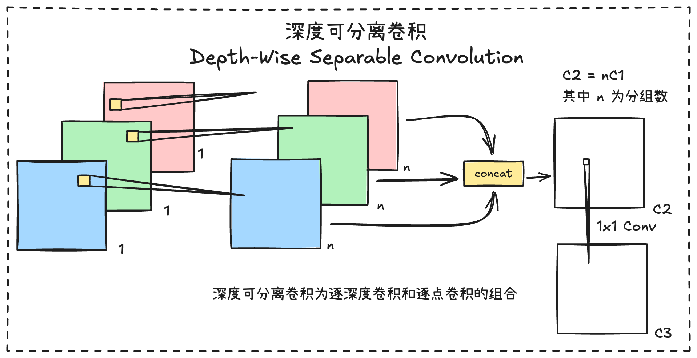
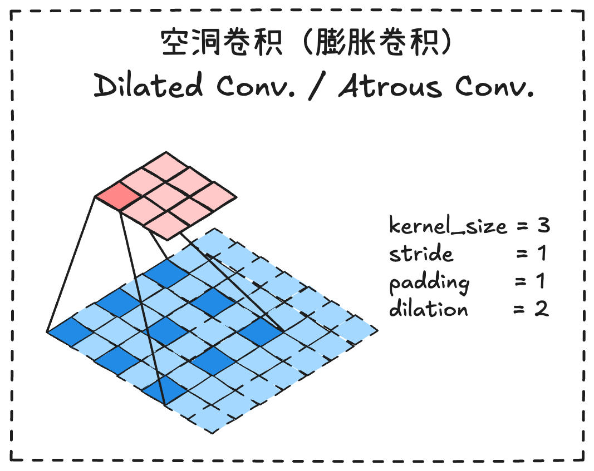
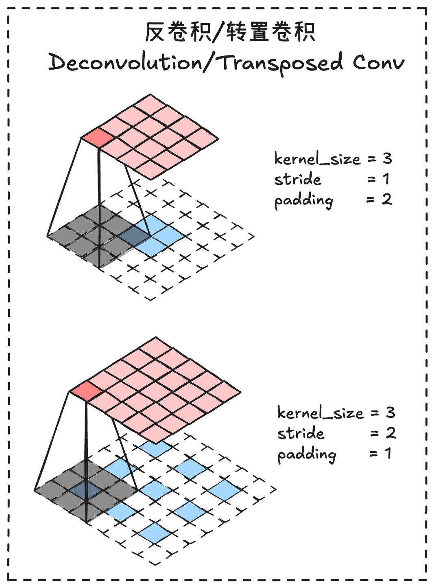
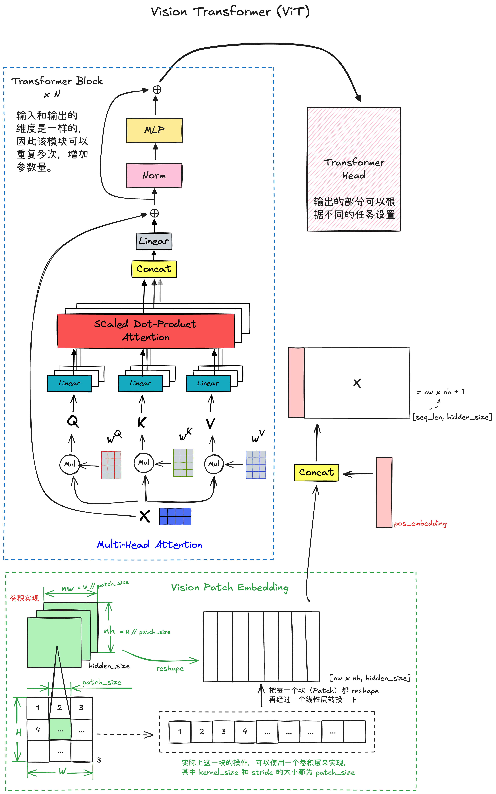

各种卷积方式








网络结构
ViT（Vision Transformer）

基本原理
ViT 与 Transformer 的唯一区别就在于，ViT 多了一个将图片进行嵌入的操作，简单地将就是把图片想个办法转换成 Transformer 的输入形式。实现这一个部分的操作就是 Vision Patch Embedding。
Vision Patch Embedding 把图片均匀分成一个一个的 Patch，然后把每一个 Patch reshape 成一维，这样就可以进入一个线性层，最后把所有 Patch 经过线性层之后的输出，与 pos_embedding 拼接成一个矩阵，作为 Transformer Block 的输入。看懂了 Patch Embedding 就懂 ViT 了。
Vision Patch Embedding 的实现，其实就是一个卷积操作，其中 kernel_size 和 stride 都为 patch_size，完整的结构可以看上图。
代码实现
import torch
from torch import nn
class TransformerHead(nn.Module):
def __init__(self, hidden_dim):
super().__init__()
self.ln = nn.LayerNorm(hidden_dim)
def forward(self, x):
x = self.ln(x)
return x
class TransformerBlock(nn.Module):
def __init__(self, num_heads, hidden_dim, mlp_dim, dropout, attention_dropout):
super().__init__()
self.num_heads = num_heads
self.ln_1 = nn.LayerNorm(hidden_dim)
self.self_attention = nn.MultiheadAttention(hidden_dim, num_heads, dropout=attention_dropout, batch_first=True)
self.dropout = nn.Dropout(dropout)
self.ln_2 = nn.LayerNorm(hidden_dim)
self.mlp = nn.Sequential(
nn.Linear(hidden_dim, mlp_dim),
nn.GELU(),
nn.Dropout(dropout),
nn.Linear(mlp_dim, hidden_dim),
nn.Dropout(dropout),
)
def forward(self, input):
x = self.ln_1(input)
x, _ = self.self_attention(x, x, x, need_weights=False)
x = self.dropout(x)
x = x + input
y = self.ln_1(x)
y = self.mlp(y)
return x + y
class VisionPatchEmbedded(nn.Module):
def __init__(self, image_size, hidden_dim, patch_size, dropout):
super().__init__()
self.image_size = image_size
self.patch_size = patch_size
self.hidden_dim = hidden_dim
self.conv_proj = nn.Conv2d(in_channels=3, out_channels=hidden_dim, kernel_size=patch_size, stride=patch_size)
self.class_token = nn.Parameter(torch.zeros(1, 1, hidden_dim))
self.seq_length = (image_size // patch_size) ** 2 + 1
self.pos_embedding = nn.Parameter(torch.empty(1, self.seq_length, self.hidden_dim).normal_(std=0.02))
self.dropout = nn.Dropout(dropout)
def forward(self, x):
batch_size, _, h, w = x.shape
n_h = h // self.patch_size
n_w = w // self.patch_size
x = self.conv_proj(x)
x = x.reshape(batch_size, self.hidden_dim, n_h * n_w)
x = x.permute(0, 2, 1)
batch_class_token = self.class_token.expand(batch_size, -1, -1)
x = torch.cat([batch_class_token, x], dim=1)
x = x + self.pos_embedding
x = self.dropout(x)
return x
class VisionTransformer(nn.Module):
def __init__(self, image_size, patch_size, num_layers, num_heads, hidden_dim, mlp_dim, attention_dropout, dropout):
super().__init__()
self.patch_embedded = VisionPatchEmbedded(image_size, hidden_dim, patch_size, dropout)
self.transformer_layers = nn.Sequential(
*[TransformerBlock(num_heads, hidden_dim, mlp_dim, dropout, attention_dropout) for _ in range(num_layers)])
self.head = TransformerHead(hidden_dim)
def forward(self, x):
x = self.patch_embedded(x)
x = self.transformer_layers(x)
x = self.head(x)
return x
if __name__ == '__main__':
image = torch.randn((1, 3, 224, 224))
_, _, height, width = image.shape
image_size = height
model = VisionTransformer(image_size, patch_size=16, num_layers=12, num_heads=12, hidden_dim=768, mlp_dim=3072,
attention_dropout=0.5, dropout=0.5)
output = model(image)
print(output.shape)